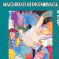

Celtic Lyrics Corner > Artists & Groups > Domhnaill Family > No Dowry > Martha, The Flower Of Sweet Strabane
|  | Martha, The Flower Of Sweet Strabane |
| Credits : | Traditional; arranged by Maighread Ní Dhomhnaill & Dónal Lunny |
| Appears On : | No Dowry ; Voices Of Celtic Women 2 (compilation) |
| Language : | English |
Lyrics :
If I was King of Ireland with all things at my will
I'd roam for recreation, new comfort to find still
But the comfort I would like the best, as you will understand
Oh would be to gain that lovely maid, the flower of sweet Strabane
Her cheeks were like the roses red, her hair of lovely brown
And o'er her milk-white shoulders, hair ringlets hanging down
She's one of the fairest creatures of the whole Milesian Clan
Sure my heart is fairly captured by the flower of sweet Strabane
But since I cannot win you, love, no joy there is for me
I will seek forgetfulness in the land across the sea
Unless you chance to follow me, I'll swear by my right hand
MacDonald's face you never will see, fair flower of sweet Strabane
I wished I had my darling way down in Inisowen
Or in a lonesome valley in the wild woods of Tyrone
I would do my whole endeavour, I would work my newest plan
For to gain you, lovely Martha, the flower of sweet Strabane
I've often been in Phoenix Park and then Killarney fair
Likewise in bonny Scotland and the winding banks of Ayr
But yet, in all my travels, I never met with one
That I could compare with Martha, the flower of sweet Strabane
Farewell bonny Lifford and to Mourne's Waterside
I'm sailing for America, whichever may betide
Our ship is bound for Liverpool straight by the Isle of Man
So farewell my dearest Martha, the flower of sweet Strabane